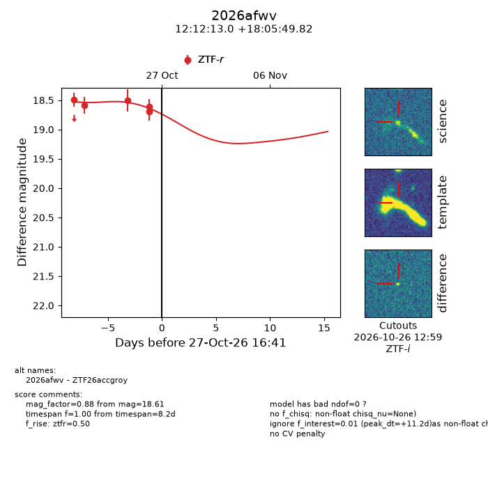
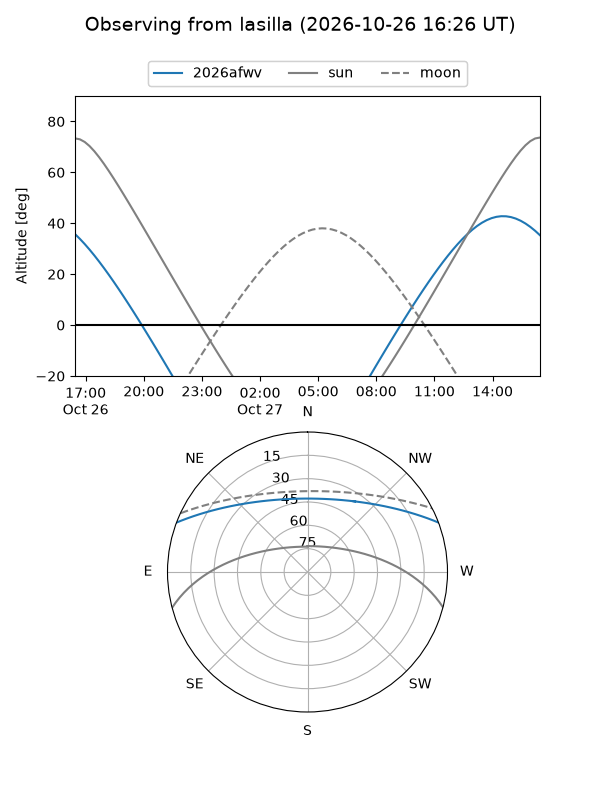
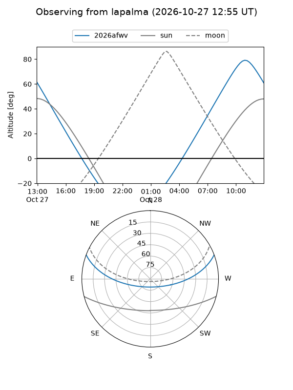
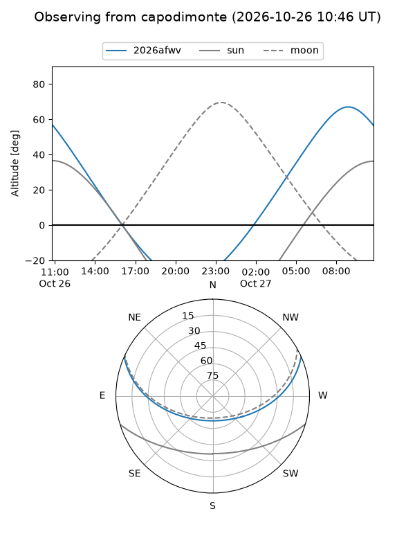
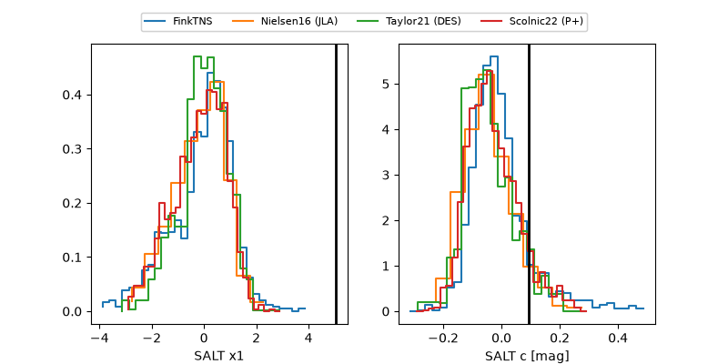

2026afwv
Target 2026afwv at 2026-10-27 16:42
Aliases and brokers:
FINK-ZTF: ztf.fink-portal.org/ZTF26accgroy
Lasair-ZTF: lasair-ztf.lsst.ac.uk/objects/ZTF26accgroy
ALeRCE-ZTF: alerce.online/object/ZTF26accgroy
YSE-PZ: ziggy.ucolick.org/yse/transient_detail/2026afwv
TNS name: wis-tns.org/object/2026afwv
Direct TNS query: direct search
alt names
ZTF26accgroy (ztf,fink_ztf)
2026afwv (tns,yse)
Coordinates:
equatorial (ra, dec) = 183.0541,+18.09717
equatorial (HMS+DMS) = 12:12:12.98,+18:05:49.82
galactic (l, b) = (255.8722,+77.22486)
Flags:
peak dt: +11.2
Photometry:
last ztfr=18.61
5 ztfr detections
Lightcurve

Visibility



Additional plots
